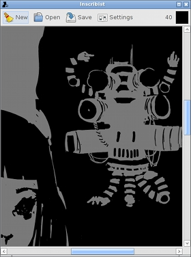
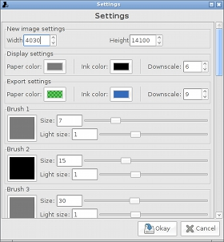

|


|
Inscribist is an efficient two-color drawing program. Even on older hardware, it can smoothly handle huge images (10000x10000 pixels and more) and brushes (1000 pixel radius) with unnoticable latency.
Concepts
- colors: Each image has a "foreground" and "background" color. Because the pixels in the image are encoded as run-lengths of the foreground and background color, you can easily replace the colors at any time. Inscribist also allows you to specify different color settings for exporting and drawing.
- oversampling: Because Inscribist only uses two colors, it can't antialias your strokes. In order to get smoothed images, exporting and display downsample the image by a configurable amount. The resultant resolution will be smaller than your working resolution, so plan ahead and work at a much larger resolution than you think you'll need.
- brushes: Brushes use either the foreground or background color and have a radius. Inscribist remembers ten brush configurations.
- devices: Inscribist recognizes a number of input devices, including mice, drawing styluses, trackpads, etc. Associate a brush with your current drawing device by pressing the brush number on your keyboard.
Keyboard
- 0-9: Select brush 0-9.
- tab, space, enter: Switch between background and foreground color.
- h, v: Flip the image horizontally, vertically
- ctrl + s: Save (or save as, if you haven't yet saved).
- ctrl + Shift + s: Save as.
- ctrl + z, ctrl + shift + z: Undo, redo.
- [, ]: Zoom in, zoom out (or maybe that's backwards).
- left, right, up, down: Roll image left, right, up, down.
Numeric Keypad
- 0-9: Select brush 0-9.
- enter: Switch between background and foreground color.
- *, /: Flip the image horizontally, vertically
- +, -: Zoom in, zoom out (or maybe that's backwards).
- left, right, up, down: Roll image left, right, up, down.
Inscribist can both save and load .inscribble files (BZ2 compressed, run length encoded) and export .png files.
Download
Version 6 released 2013-7-25. Releases with (magnet) in the link require a bittorrent client with magnet link support to download.
Inscribist depends on Lua, GTK+ 2 and bzip2. Inscribist was inspired by gsumi.
|
{kind=link}
{kind=link}